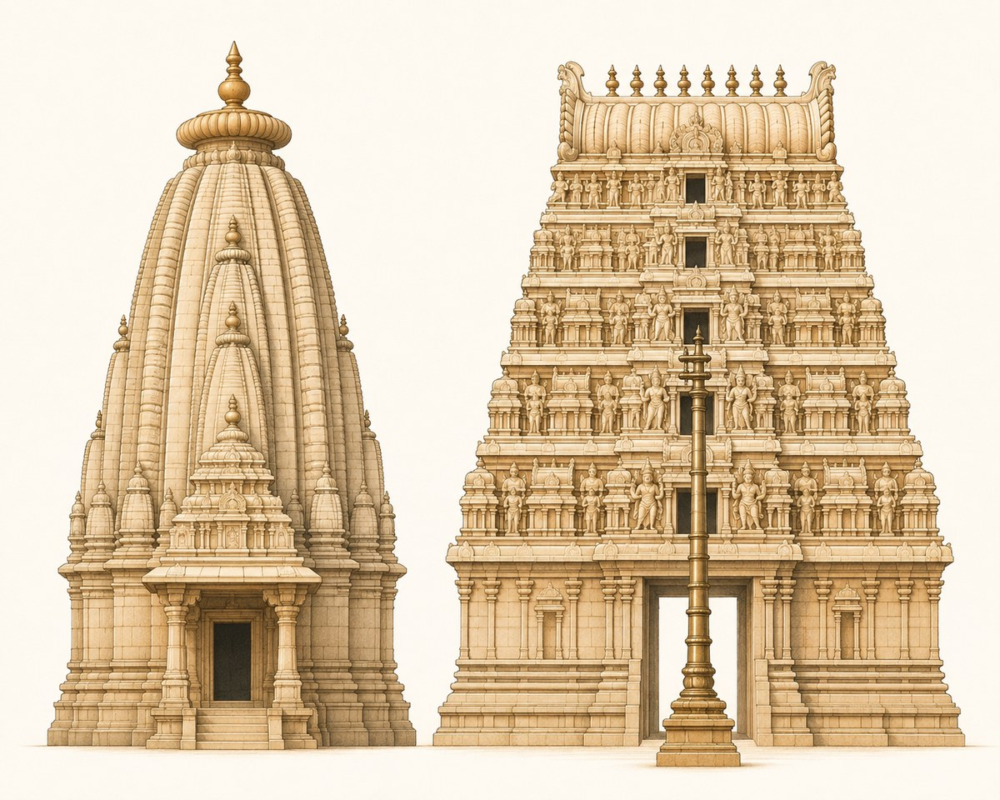
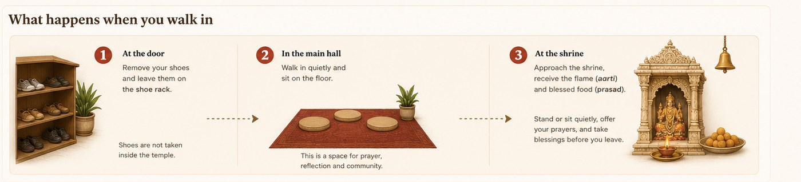

Visiting a Hindu temple in the UK
A practical guide for first-time visitors, teachers planning an RE trip, and anyone who has walked past a mandir and wondered whether they could go in. You can. Hindu temples in Britain are open to people of any faith or none, and there is no entry charge.
This site is a directory, not a booking service — it is run by one person, and visits are arranged with each temple directly. What follows is everything worth knowing before you make that call.
What the building will look like
Britain's mandirs fall into three broad architectural types. Most are the third — ordinary buildings, often former churches and chapels, converted by communities who arrived with very little. A converted hall is no less a temple: a building becomes a mandir when the murtis are installed in it.

| Type | What to look for | See it in the UK | Classical examples |
|---|---|---|---|
| North Indian (Nagara) | A tall curved tower (shikhara) rising directly over the shrine, topped by a ribbed disc (amalaka) and a pot finial (kalasha). | BAPS Shri Swaminarayan Mandir, Neasden · Shree Sanatan Mandir, Leicester | Kandariya Mahadeva, Khajuraho · Lingaraja Temple, Bhubaneswar · Somnath, Gujarat |
| South Indian (Dravidian) | A stepped pyramid gateway tower (gopuram) crowded with figures, a shorter tower (vimana) over the sanctum, and a metal flagstaff (kodimaram) facing the shrine. | Shri Venkateswara (Balaji) Temple, Tividale · London Sri Murugan Temple, Manor Park | Meenakshi Amman Temple, Madurai · Brihadeeswarar Temple, Thanjavur · Ranganathaswamy, Srirangam |
| Converted building | An existing British building — usually a former church, chapel, hall or warehouse — consecrated as a mandir by installing the murtis. Often the only outward sign is a kalasha, a flag or a painted sign. | Shree Ghanapathy Temple, Wimbledon (former church hall) · most temples in this directory | No Indian equivalent — this type exists because of migration, and is uniquely a diaspora form. |
A third style, Vesara, blends the two and is common in the Deccan, but is rarely seen in Britain. Which type you find near you depends on the community that built it — the five traditions guide explains why, and every listing in this directory is labelled by tradition.
What happens when you walk in

- At the door — remove your shoes and leave them on the rack. Shoes are never taken inside.
- In the main hall — walk in quietly and sit on the floor. This is a space for prayer, reflection and community.
- At the shrine — approach when you are ready, receive the flame (aarti) and blessed food (prasad). Stand or sit quietly, offer your prayers, and take blessings before you leave.
You will not be expected to do anything beyond removing your shoes and being quiet. Standing at the back and watching is completely normal.
The things worth knowing
Shoes come off
Always, without exception. There will be racks or shelves at the entrance. Socks are fine. This is about keeping the shrine space clean, not about you personally.
Dress modestly
Cover shoulders and knees. No special clothing is needed and you don't need to wear Indian dress. Avoid clothing with leather where you can — some temples ask visitors to leave leather belts and bags outside.
You can go in
Hindu temples are open to people of any faith or none. You do not need to be Hindu, and you will not be asked to worship or to convert. Standing quietly and observing is entirely normal and welcome.
Photography — ask first
Rules vary a lot. Many temples allow photos of the building but not of the murtis or during worship. Some prohibit phones in the shrine entirely. Always ask before taking a picture.
Prasad will be offered
Blessed food — often fruit, sweets or a full vegetarian meal — is shared with everyone. Accept it with your right hand if you can. It is a gesture of hospitality; declining politely is fine if you have allergies.
Don't point your feet at the shrine
When sitting on the floor, cross your legs or tuck your feet under you rather than stretching them toward the deities.
Walk clockwise
If people are circling the shrine (pradakshina), follow the same direction.
Donations are voluntary
There is usually a donation box (hundi). Nobody will ask you for money, and there is no entry fee.
Food is vegetarian
Temple kitchens are vegetarian, and many exclude onion and garlic. Do not bring meat, alcohol or leather items into the building.
For teachers: planning an RE visit
A mandir visit is one of the few ways to make Religious Education genuinely concrete, and it maps directly onto the locally agreed syllabus your SACRE sets. What pupils get from it depends heavily on their key stage.
Sacred stories and visible symbols. Pupils meet Diwali and the story of Rama and Sita, the aum symbol, and the idea that a building can be special to people.
A mandir visit works best as sensory: the bell, the lamp, the colours, shoes coming off at the door.
Worship and belief in practice — puja, aarti, the murti and the shrine, Brahman as one reality expressed in many deities, and ideas of dharma and karma.
The strongest level for a temple visit. Pupils can observe an aarti, identify the shrine, and ask a member of the community directly.
Worldviews, diversity and community. Hinduism is not one uniform practice — pupils examine how belief shapes real communities in Britain.
Use the diversity of British mandirs deliberately: a Tamil kovil and a Swaminarayan mandir make the point better than any textbook.
Beliefs, teachings and practices in depth, including denominational differences, worship, pilgrimage and ethical themes.
Interviewing a temple volunteer about how practice differs between traditions gives pupils primary-source material.
Risk assessment and safeguarding
Your school will complete its own risk assessment — this page cannot do that for you, and no temple listed here should be treated as pre-approved. What we can tell you is what to establish beforehand, because it is what schools consistently need and temples are rarely asked in advance:
- Access and parking — whether a coach can set down safely, and where it can wait.
- Step-free access and toilets — many British mandirs occupy older converted buildings, so this genuinely varies.
- Shoes off — worth checking for any pupil for whom removing footwear is a mobility or medical issue; temples are almost always willing to accommodate.
- Capacity and quiet times — avoid festival days unless the visit is about a festival, when temples are extremely busy.
- Supervision — temples are volunteer-run and DBS status varies, so plan for your own staff to supervise throughout. This is normal and no temple will take offence.
- Food — prasad is usually offered. Check ingredients against pupil allergies, and say in advance if any pupil cannot accept food.
Contacting the temple
Most temples are glad to host schools, but they are run by volunteers, so give plenty of notice and always ring ahead.
Contact the temple directly; this site cannot arrange a visit for you. Use the postcode finder to see which temples are nearest your school, then phone or email using the details on their listing. Worth asking when you call:
- Do you welcome school groups, and what size can you accommodate?
- Is there a quiet time of day that would suit a class visit?
- Is there coach or minibus parking nearby?
- Is the building step-free, and are there accessible toilets?
- Will someone be available to speak to the pupils, and in English?
- Are photographs allowed, and can pupils take notes inside?
- Should pupils bring anything, or avoid bringing anything?
- Is there a donation you would suggest for a group visit?
Two things that make a visit go well: tell pupils in advance that shoes come off and phones may need to stay in bags, and ask the temple what their own community would most like the class to understand. The answer is often not what a textbook would predict.
It also helps to know what kind of temple you are visiting. A Tamil kovil, a BAPS mandir and a community Sanatan temple offer very different experiences — see the guide to the five traditions.
Find temples near you
Search any UK postcode on the interactive map, or start from a city:
Browse all 154 temples by region →
Common questions
Can non-Hindus visit a Hindu temple?
Yes. Hindu temples in Britain are open to visitors of any faith or none. You will not be asked to take part in worship or to convert. Remove your shoes, dress modestly, and be quiet and respectful — that is all that is expected.
Do I need to book to visit a Hindu temple?
As an individual, usually not — just arrive during opening hours. For a group or a school class, always contact the temple first. Use the temple finder to get their phone number or website.
What should I wear to a Hindu temple?
Ordinary modest clothing covering shoulders and knees. No Indian dress is required. Shoes always come off at the entrance, so wear socks if you would rather not be barefoot.
Are Hindu temples free to enter?
Yes. There is no entry charge. Most temples have a donation box, but donating is entirely voluntary.
Can I take photographs inside?
Ask first. Policies differ: many temples allow photos of the building but not of the murtis or during worship, and some do not allow phones in the shrine at all.
How do I arrange a school visit to a Hindu temple?
Contact the temple directly — this directory is not a booking service. Find your nearest temples with the postcode finder, then phone or email them using the details on their listing. The questions to ask are listed above.